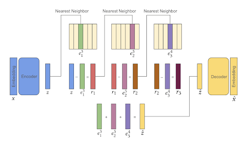
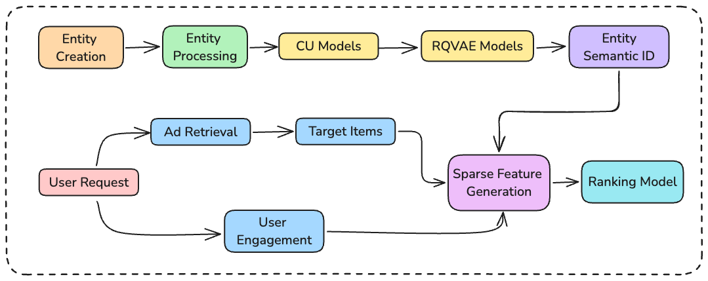

Enhancing Embedding Representation Stability in Recommendation Systems with Semantic ID
Авторы: Carolina Zheng, Minhui Huang, Dmitrii Pedchenko, Kaushik Rangadurai, Siyu Wang, Gaby Nahum, Jie Lei, Yang Yang, Tao Liu, Zutian Luo, Xiaohan Wei, Dinesh Ramasamy, Jiyan Yang, Yiping Han, Lin Yang, Hangjun Xu, Rong Jin, Shuang Yang.
Аффилиации: Columbia University; AI at Meta.
Индустрия: Meta Ads / industrial ranking
Первичные источники: arXiv:2504.02137 HTML/PDF.
Коротко
Meta рассматривает Semantic ID как стабильную sparse representation для ads ranking, а не только как identifier для generative retrieval.
Основной тезис: random hashing неизбежно создает случайные коллизии, а Semantic ID позволяет делать parameter sharing семантически осмысленным.
Работа полезна тем, что разбирает production проблемы item cardinality, impression skew, ID drift, serving и A/B variance.
Контекст
В рекламном ranking item/raw ad ID быстро меняется: часть объявлений исчезает, новые объявления появляются каждый день, а head items получают непропорционально много impressions.
Embedding table ограничена по памяти, поэтому крупные ID-признаки часто хешируются; при этом один row может агрегировать градиенты от несвязанных объявлений.
Авторы используют Content Understanding embeddings из Meta ads stack: CU-модели предобучены на CC100 и дообучены на внутренних ads data.
Проблема
Статья формулирует проблему как representation stability: нужно, чтобы embedding row сохранял близкий смысл во времени и между похожими объявлениями.
- Высокая cardinality item/ad IDs превышает разумный размер embedding table.
- Top 0.1% items дают около 25% impressions; следующие 5.5% дают еще около 50%; tail 94.4% items получает оставшиеся 25%.
- ID drift жесткий: по Figure 3 половина исходного корпуса перестает быть active уже примерно через 6 дней.
- Random hash pollution смешивает unrelated items и создает noisy updates.
- Individual embeddings хорошо запоминают head, но плохо помогают new/cold items.
- Нужно внедрение в уже существующий sparse-feature ranking pipeline, без полной замены production модели.
Метод/архитектура
Ключевой объект - RQ-VAE Semantic ID, построенный поверх content embedding объявления. Код имеет иерархические уровни: coarse части кода описывают общую семантику, более глубокие части уточняют item.
Затем Semantic ID превращается в sparse features через token parameterization. Авторы сравнивают trigram, fourgram, all bigrams и prefix-ngram; лучший вывод paper - использовать hierarchy-aware prefix-ngram.
- Offline RQ-VAE обучается на ad IDs и content embeddings за последние три месяца.
- Production RQ-VAE затем замораживается и используется при ad creation/feature generation.
- Prefix-ngram parameterization маппит разные гранулярности Semantic ID в embedding rows.
- Если cardinality parameterization больше таблицы, применяется modulo hash, но collisions уже происходят внутри semantic tuple space.
- Для production авторы используют prefix-5gram design.
- Semantic features строятся как для target item, так и для user engagement histories.
- Serving pipeline: CU model -> RQ-VAE -> Entity Data Store -> feature generation -> ads ranking model.


Objective/алгоритм
Loss RQ-VAE отвечает за квантование content embedding, а downstream objective ranking модели измеряется normalized entropy / click prediction quality. Смысл работы не в новом supervised loss, а в выборе parameterization, которая лучше переносит обучение между items.
- Normalized Entropy используется как главная offline ranking metric: меньше лучше.
- Prefix-ngram выигрывает у trigram/fourgram/all-bigrams, потому что использует все уровни иерархии.
- Увеличение глубины prefix-ngram улучшает NE.
- Увеличение cardinality RQ-VAE также улучшает NE, пока serving/memory это выдерживает.
- Для user history анализируются attention metrics: attention на первый source token, padding attention, entropy и token self-attention.
- Semantic ID модели имеют более низкие entropy/padding/self-attention и больше внимания к signal tokens.
Эксперименты
Paper содержит offline experiments, segment analysis, representation-space analysis, user-history modeling и productionization.
- Baselines: individual embeddings, random hashing, Semantic ID.
- Table 3 показывает, что Semantic ID помогает tail и new items относительно random hashing / individual embeddings.
- Для distribution shift sensitivity Semantic ID и individual embeddings стабильнее random hashing на all items.
- Online A/B mutation test заменяет item в recommendation set на item с тем же Semantic ID prefix и измеряет click loss rate.
- Figure 5 показывает: чем глубже prefix, тем меньше click loss rate, то есть prediction similarity коррелирует с semantic similarity.
- В production Semantic ID features используются в Meta Ads Recommendation System больше года.
- Авторы сообщают 6 sparse features и 1 sequential feature из text/image/video content embeddings.
- Для flagship ads ranking model reported top-line online gain около 0.15%.
Рисунки/таблицы
Рисунки важны не как decoration, а как аргументы о production viability.
- Figure с RQ-VAE показывает источник discrete hierarchy.
- Figure serving pipeline показывает, что тяжелое квантование не лежит на hot path ranking.
- Figure click loss reduction подтверждает monotonic связь prefix depth и semantic/prediction similarity.
- Table token parameterization фиксирует практическое отличие prefix-ngram от flat n-grams.
- Table attention metrics показывает, что Semantic ID меняет поведение aggregation modules в history modeling.
Сильные стороны
Работа сильна именно industrial деталями.
- Фокус на stability/skew/drift, а не только на benchmark Recall.
- Совместимость с existing ads ranking sparse modules.
- Ясный production lifecycle: offline training, frozen checkpoint, Entity Data Store, online feature join.
- A/B sanity check semantic similarity через controlled item mutation.
- Обсуждение A/A variance и random hashing как источника нестабильности.
Ограничения
Ограничения в основном связаны с закрытым production контекстом.
- Данные internal, поэтому точная репликация невозможна.
- CU encoder и ads taxonomies могут сильно влиять на результат.
- Нет решения задачи generative constrained decoding.
- Версионирование RQ-VAE становится production dependency.
- Modulo hash поверх semantic tuples все еще может давать collisions, просто менее случайные.
- Главный общий failure mode для SID-подходов: semantic collision выглядит осмысленно offline, но смешивает конкурирующие items в конкретном business objective.
- Второй общий failure mode: tokenizer обучен на старом каталоге и перестает отражать новые категории, бренды, форматы или geography.
- Третий общий failure mode: offline Recall/NDCG улучшается, но serving latency, graph refresh, feature joins или beam constraints съедают online gain.
Как реализовать/проверять
Для внедрения статья дает достаточно конкретный план.
- Собрать content embeddings за стабильное окно, например последние 1-3 месяца.
- Обучить RQ-VAE и зафиксировать codebook sizes/depth.
- Сгенерировать full SID и набор prefix-ngram features.
- В ranking model сравнить random hash, full SID, prefix-only, prefix-ngram.
- Отдельно смотреть head/torso/tail и new-item cohorts.
- Перед online rollout сделать mutation test: замены внутри prefix должны давать меньший loss, чем random replacements.
- Зафиксировать версию tokenizer-а, vocabulary/codebook sizes, seed, дату обучения и покрытие каталога.
- Логировать invalid/generated-not-in-catalog rate отдельно от Recall/NDCG, потому что генеративная модель может улучшать ranking среди валидных, но терять кандидатов на этапе декодирования.
- Делать slice-анализ по popularity bucket, item age, cold-start cohort и длине пользовательской истории.
- Сравнивать не только с SID-only baseline, но и с ID-only/hybrid baseline: в production ID memorization часто остается сильным сигналом.
- Проверять распределение кодов: entropy/perplexity, долю неиспользуемых кодов, top-code concentration и collision examples.
- В online rollout начинать с shadow features или candidate sidecar, чтобы отделить эффект tokenizer-а от эффекта retriever/ranker.
Связь
Эта работа связывает Semantic ID research с классическим ranking.
- Ближе всего к Unified Semantic+ID и Harmonizing SID/HID: все три не требуют полного отказа от ID features.
- Отличается от TIGER/RPG/SETRec тем, что SID не обязательно генерируется моделью как output.
- Служит production аргументом в пользу semantic collisions вместо random collisions.
Итог
Главный вывод прост: если collisions неизбежны, надо управлять их смыслом.
- Semantic ID полезен как feature-store primitive.
- Prefix-ngram - практичный способ превратить иерархический код в parameter sharing.
- Для ads ranking ценность SID проявляется в tail transfer, drift robustness и более стабильном serving behavior.